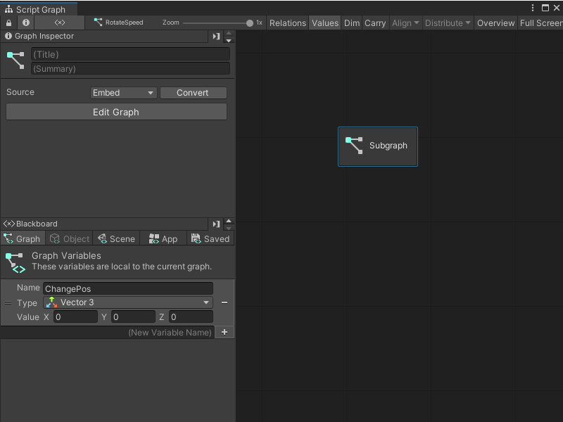

Add a Subgraph to a Script Graph¶
A Subgraph is a Script Graph nested inside of another Script Graph. A Subgraph appears as a single node inside the parent Script Graph.
You can add a Subgraph to a Script Graph in two ways: create an entirely new Script Graph, or add an existing Script Graph file.
Add a new Subgraph to a Script Graph¶
To add a new blank Subgraph to an existing Script Graph:
[!includewith-graph-open-ff]. Go to Nesting and select Subgraph.
In the Graph Inspector, choose the Source for your Subgraph:
Embed: The Subgraph only exists on the Subgraph node. You can only modify the Subgraph from the node in its parent graph.
Graph: The Subgraph exists in a separate file. You can modify the Subgraph outside of its parent graph and reuse the graph in other areas of your application.
[!includegraph-inspector-tip.md]
If you chose Graph, select New, enter a name for your graph file, and choose where you want to save it. Select Save.

Add an existing Script Graph as a Subgraph¶
To add an existing graph file as a Subgraph in a Script Graph:
[!NOTE] You can’t nest a Script Graph as a Subgraph in its own graph file.
[!includewith-graph-open-ff]. Go to Nesting and select Subgraph.
In the Graph Inspector, set your Source to Graph.
[!includegraph-inspector-tip.md]
In the Graph field, select the object picker (circle icon) and choose a compatible Script Graph from your project. You can also click and drag a Script Graph file from your Project window and drop it into the Graph field.

[!TIP] For a faster way to add a Script Graph as a Subgraph, click and drag the Script Graph from your Project window into the Graph Editor to automatically create a Subgraph node.
Next steps¶
To open your new Subgraph for editing, select Edit Graph.
Once you’ve added a Subgraph to your Script Graph, define its Input and Output Triggers and Input and Output Data. For more information, see Add a Trigger or Data port to a Script Graph.